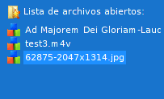
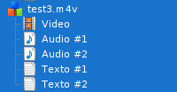
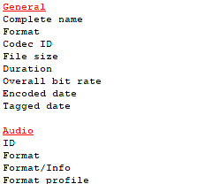

Éste programa intenta ser una opción de reemplazo a la ya existente GUI para MediaInfo
Ver en Bitbucket.
Ver en AUR
Utiliza FOX Toolkit como framework.
 Permite observar los archivos abiertos. De ésta manera es más sencillo poder seleccionar un archivo para ver sus propiedades.
 Para cada archivo listado también se enumeran las propiedades de éste, por ejemplo, para un archivo de vídeo se listarán las propiedades: General, Vídeo, Audio, Texto y Menú
 Las propiedades en el informe General se marcan con un color.
Abre un archivo/directorio que es arrastrado y soltado sobre la lista de archivos abiertos.
Permite guardar, en archivo de texto plano, el resultado del informe.
Última edición : mié sep 10 20:55:55 ART 2015